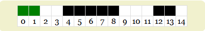

Bloom Filtresi (Bloom Filter)
Bir önceki yazımda olasılıksal veri yapılarından bahsetmiştim. Bu yazıda ise bu veri yapılarından biri olan Bloom filtresini inceleyeceğiz. Bloom filtresi, bir küme içerisinde bir elemanın olup olmadığını belirlemek için kullanılır. Olasılıksal bir veri yapısı olduğu için, kesin (exact) bir sonuç vermez. Yani, bir elemanın kümede olup olmadığını kontrol ederken, yanlış pozitif (false positive) sonuç verebilir. Ancak, yanlış negatif (false negative) sonuç vermez. Yani, eğer bir eleman kümede yoksa, Bloom filtresi bunu kesin olarak belirler.
Bir bloom filtresi temel olarak iki bileşenden oluşur:
- Bit dizisi (bit array): Elemanların varlığını kontrol etmek için kullanılır. Bu dizi, elemanların varlığını temsil eden bitlerden oluşur. Her bit, bir elemanın kümede olup olmadığını gösterir. Eğer bir bit 1 ise, o eleman kümede vardır. Eğer bir bit 0 ise, o eleman kümede yoktur.
- Birden fazla hash fonksiyonu: Elemanları bit dizisine yerleştirmek için kullanılır.
Örnek olarak 15 bit uzunluğunda bir bit dizisi ve 2 hash fonksiyonu (fnv ve murmur) kullanalım.
Henüz hiç bir eleman eklemediğimiz için bit dizisi tamamen sıfırlardan oluşur.
Bir eleman eklemek istediğimizde, hash fonksiyonları kullanılarak bit dizisindeki bitlerin konumları belirlenir. Bu konumlar 1 olarak ayarlanır. Örneğin, “murat” kelimesini eklemek istediğimizde, fnv ve murmur hash fonksiyonları ile hesaplanan konumlar 7 ve 8 olsun (mod 15). Bu durumda bit dizisi şu şekilde güncellenir:
Daha sonra “murat” kelimesinin kümede olup olmadığını kontrol etmek istediğimizde, fnv ve murmur hash fonksiyonları ile hesaplanan konumlar 7 ve 8’dir. Bu konumlardaki bitler 1 olduğu için, “murat” kelimesinin kümede olduğunu söyleriz.
Bloom filtresinin olasılıksal bir veri yapısı olduğunu unutmayalım. Yani, bir elemanın kümede olup olmadığını kontrol ederken, yanlış pozitif (false positive) sonuç verebilir. Örneğin, kümeye aşağıdaki elemanları ekleyelim:
koptur, fnv: 13, murmur: 1
bloom, fnv: 7, murmur: 12
filter, fnv: 5, murmur: 6
probabilistic, fnv: 5, murmur: 12
data, fnv: 4, murmur: 5
structures, fnv: 1, murmur: 0
Bu durumda bit dizisi şu şekilde güncellenir (2,3,9,10,11,14 hariç her bit 1):

Bu durumda “murat” kelimesinin kümede olup olmadığını kontrol ettiğimizde, fnv ve murmur hash fonksiyonları ile hesaplanan konumlar 7 ve 8’dir. Ancak başka bir eleman ya da elemanların kombinasyonu bu konumları 1 yapmış olabilir. Bu durumda yanlış pozitif (false positive) sonucu alırız.
Bloom filtresinin yanlış pozitif (false positive) oranı aşağıdaki formül ile hesaplanır:
$P = (1 - e^{-\frac{kn}{m}})^k$
Bu formülde:
- $P$: Yanlış pozitif (false positive) oranı
- $k$: Hash fonksiyonu sayısı
- $n$: Kümedeki eleman sayısı
- $m$: Bit dizisinin boyutu
- $e$: Euler sayısıdır.
Örneğin, 15 bit uzunluğunda bir bit dizisi ve 2 hash fonksiyonu kullandığımızda, 6 eleman eklediğimizde, yanlış pozitif (false positive) oranı yaklaşık yüzde 36 olarak hesaplanır. Bu oran, bit dizisinin boyutunu artırarak veya hash fonksiyonu sayısını artırarak azaltılabilir. Ancak, bit dizisinin boyutunu artırmak, bellek kullanımını artırır. Hash fonksiyonu sayısını artırmak ise işlem süresini artırır. Bu nedenle, Bloom filtresi kullanırken bu iki faktörü dikkate almak önemlidir.
n elemanlı bir dizi ve yanlış pozitif (false positive) oranı belirlediğimiz bir Bloom filtresi için bit dizisinin boyutunu ve hash fonksiyonu sayısını hesaplamak için aşağıdaki formülleri kullanabiliriz:
$$ m = - \frac{n \ln\epsilon}{(\ln2)^2} $$ $$ k = - \frac{\ln\epsilon}{\ln2} $$
Bloom filtresinin bir dezavantajı, eleman silmeye izin vermemesidir.
Bir sonraki yazıda görüşmek üzere.
Kaynaklar
- https://llimllib.github.io/bloomfilter-tutorial/
- https://redis.io/docs/latest/develop/data-types/probabilistic/bloom-filter/